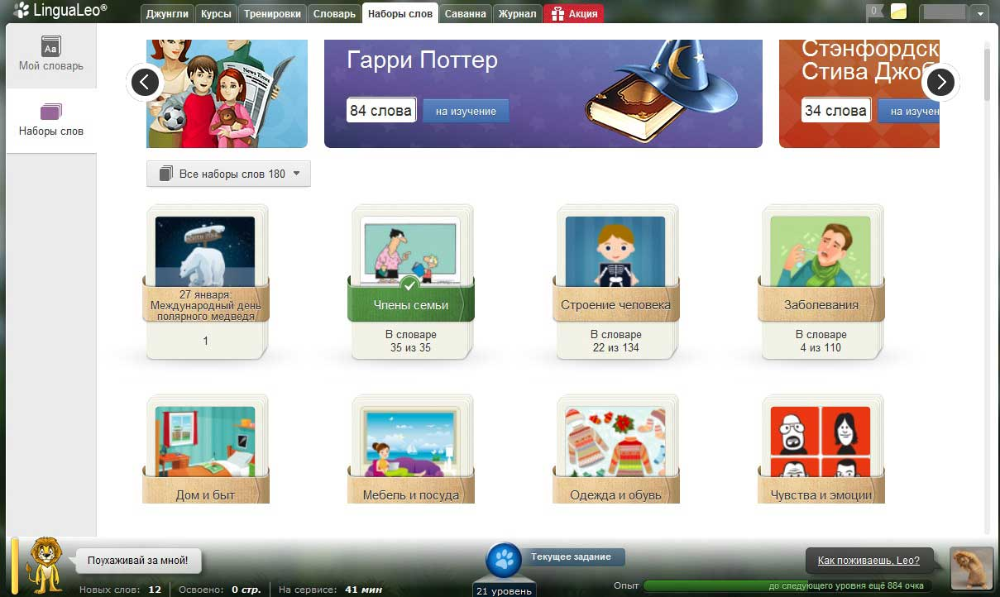
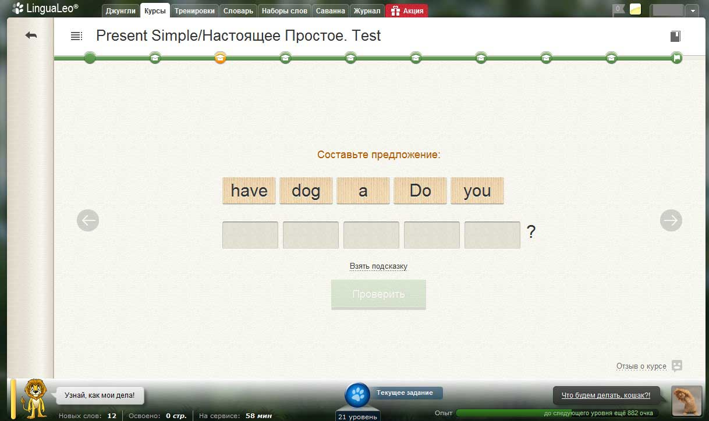
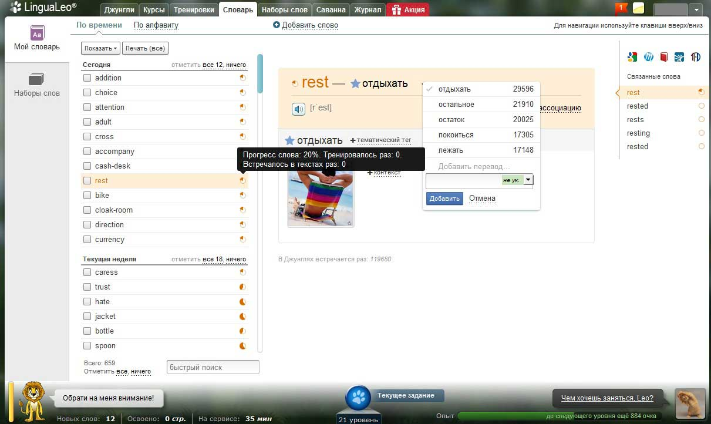
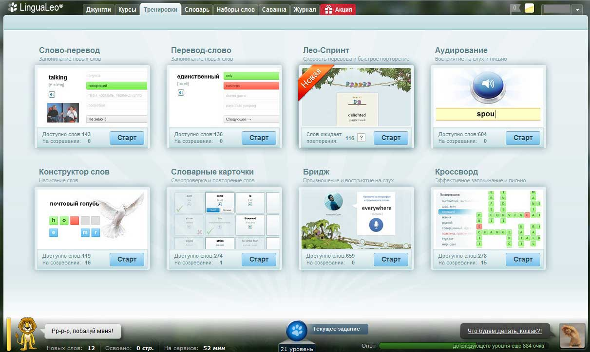
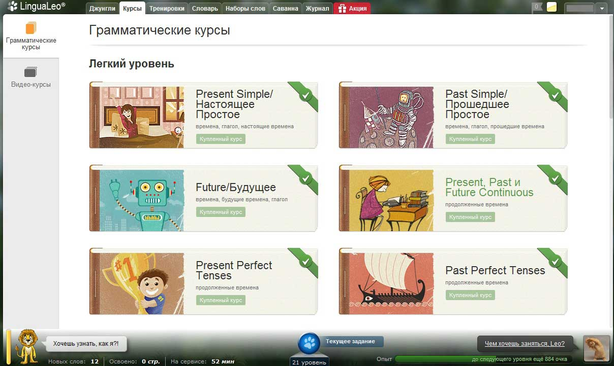
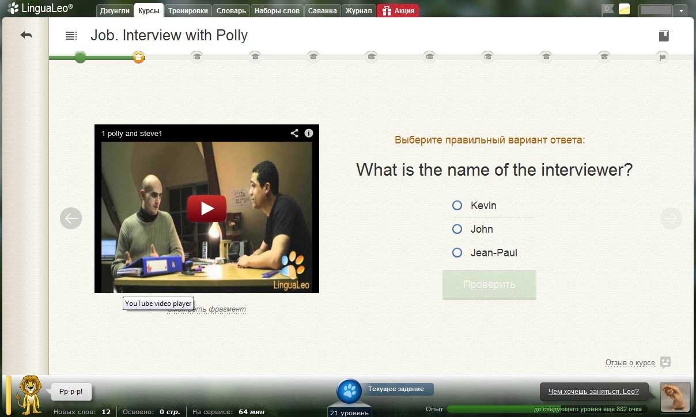
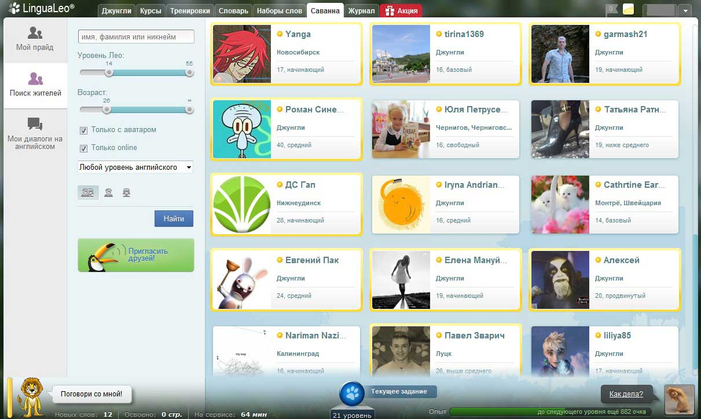

Можно ли выучить английский язык по интернету?
Процесс изучения иностранного языка насыщен сложностями и рядом препятствий, которые обязательно будут преследовать новичка. Во-первых, финансовый вопрос имеет достаточно весомое значение, так как оплата репетиторства, курсов и покупка дополнительной литературы – дело достаточно затратное.
Во-вторых, сложность занятий и их продолжительность, причем вам предстоит не только проводить совместные уроки с репетитором, но и постоянно самостоятельно обучаться, повышая навыки. А если убрать первую проблему, то есть заняться самообразованием, то взамен выигранных денег вы рискуете значительно усложнить свой процесс образовывания, так как непонятность языка быстро убьет мотивацию обучения, ведь вам не будет ясно о достигнутых успехах.
Чаще всего именно метод обучения отвечает за темпы и качество получения навыков владения иностранным языком. Одни из качественных сервисов обучения иностранному языку считается LinguaLeo.
Устройство LinguaLeo
Игровая подача материала – суть обучающего курса в LinguaLeo. Обычно обучение сопровождается рутинными занятиями с типовыми методами, которые не способны заинтересовать студента и быстро убьют тягу к обучению. Детско-игровая подача сопровождается легкостью предоставления материала, что обеспечивает простоту восприятия. Каждый участник взаимодействует с помощником – Лео, которые отвечает на все образовательные запросы. Львенок очень любит кушать, ведь это обеспечивает его рост, но не стоит пытаться его накормить обыкновенной пищей, так как исключительно ваши знания способны утолить голод Лео. Опыт получается за пройденный курс, освоение текста, ознакомление с видеоматериалом. Внутрисервисная валюта – фрикадельки, призвана рассчитываться за дополнительные услуги.
Выполненные упражнения, пройденные курсы позволяют повысить опыт, который выдастся вам в виде очков. Чтобы контролировать темпы обучения, в профиле есть специальная шкала, которая отражает текущее состояние опыта, а также предоставляет данные о получении следующего уровня. Уровней в обучающем сервисе – пятьдесят девять, причем каждый пятый будет завершаться заданием повышенной сложности, дабы дополнительно проверить ключевые точки.
Регулярные занятия – ключ к стабильному обучению языку, но вы вольны в выборе продолжительности ежедневного занятия. Ежедневные получасовые занятия более действенны, чем еженедельные, но по полдня. Усвоения малой доли материала значительно проще, чем огромной части, кроме того ежедневное повторение способствует запоминанию и улучшению произношения. Специалисты курсов LinguaLeo выделяют ряд моментов, оказывающих передовое влияние на эффективность языкового обучения: мотивация, языковое подражание, интенсивность занятий, восприятие языка.
В профиле помимо шкалы присутствует распределение целей, которые могут отражать как промежуточные этапы (подготовка к очередному тесту), так и глобальные отрезки (чтение в оригинале, качественное произношение). Такое деление позволяет повысить эффективность обучения, а рекомендации специалистов по достижению цели, делает решение проблем очень простым.
Всплывающие подсказки, постоянно возникающие при просмотре профиля и обучении, позволяют максимально быстро ознакомиться с сервисом, грамотно распределять обучающие приоритеты. Для перехода к новому курсу следует выбрать «Текущее задание». С выполнением нескольких заданий будет легче разбираться в составлении приоритетов и выборе оптимальных обучающих программ.
«Джунгли»

Более ста тысяч материалов, от текстовых, до звуковых и видеофайлов, собранных в единую обучающую коллекцию. Тематическое деление, а также подразделение по жанрам и источникам, в купе с эффективными фильтрами, позволяют отбирать наиболее востребованный материал. Например, вы сможете получить подборку по размеру текста ,а также по требуемым словам. Совмещение приятного и полезного – отличительная особенность метода обучения в LinguaLeo, чей способ предлагает просматривание интересных фильмов, прослушивание любимой музыки. Все материалы, которые приняты к обучению, автоматически попадают в раздел «На освоении».
Словарь LinguaLeo
Во время чтения статей вам могут попасться незнакомые слова, тогда их следует выделить и сервис автоматически предложит ряд переводов, среди которых предстоит выбирать правильный. Для расширения списка вариантов, сервис сотрудничает с другими системами, например, Google Translate. Словарь легко справится и с фразами, так что можно легко освоить интересные обороты и фразеологизмы, правда, нередко такой перевод сильно «хромает».
Для повышения обучения, каждое новое слово сопровождается картинкой, так как визуальное восприятие гораздо эффективнее обычного. Для улучшения воспроизведения и затрагивания звуковой памяти, каждое слово еще и воспроизводится в аудиоформате. Все новые слова автоматически переходят в актив, и будут постоянно использоваться при следующих занятиях, пока не наступит заучивание.
Тематическое разделение слов, относящихся к туризму, неправильным глаголам, бизнесу, существительным и подобным комплексам, позволяют оперативно обучаться целым темам. Списки заполняются как автоматически, формируясь из всего материала, так и могут быть дополнены вручную.
«Тренировки» - прогресс освоения материалов
Закрепление пройденных слов происходит в ряд этапов. Первый этап проходят все слова, которые верно «угадываются», а остальные остаются до следующего круга обучения. Всего есть ряд способов обучения, каждый из которых должен быть пройден:
- Слово-перевод, здесь предстоит подбирать правильное значение слова с английского на русский.
- Перевод-слово, то же самое, но изменяется направление перевода.
- Лео-Спринт – система быстрого обучения, при которой предлагается ряд слов с переводом, и в течение минуты вы выявляете ошибки.
- Конструктор слов – здесь проверяется не только возможность перевода слова на английский, но и правильность знания написания, так как его придется ввести в поле.
- Словарные карточки – проверка всех предыдущих этапов обучения, важный элемент закрепления.
- Бридж – это совместная работа с другим пользователем системы. Вам потребуется микрофон, так как придется произносить слова на английском, а оппонент будет угадывать. То же самое будет совершать и он. Здесь происходит тренировка произношения и слухового восприятия.
- Аудирование – восприятие слов на слух, с последующим их записывание. Таким образом, закрепляется знание транскрипции и восприятия.
- Кроссворд – закрепляющий метод, позволяющий лучше осваивать пройденные моменты.
Грамматические и видео курсы
Программа курсов состоит из двух видов, каждый продолжительностью более пары часов. Первые направлены на освоение грамматики, вторым курсом будет общее закрепление английского. Пробный урок бесплатен, а вот последующие курсы придется покупать, либо за «фрикадельки», либо за реальные деньги. Всего курс состоит из 16 видео занятий, ключевым звеном которых станет грамматика – времена, глаголы, формы. Набор правил, содержащийся в курсе должен обеспечить грамотное изучение. Видеоматериал дополнен тестами, которые либо содержат выбор ответа, либо требуют внесение письменного варианта.
Видео курсы существенно интереснее, так как они направлены на общее обучение. Легкость восприятия видеоматериала дополняется текстовым документом, что еще лучше облегчает усвоение материала, если происходит сложность слухового восприятия. Здесь также есть тестовая часть, которая сопровождается видео-подсказкаи. Такие курсы существенно повышают произношение и восприятие английского на слух.
«Саванна»
Это аналог обычной социальной сети, но с элементом обучения. Здесь также можно добавлять друзей, вести переписку и беседы. Но все предстоит осуществлять на английском. Живое общение в непринужденной форме призвано максимально упростить процесс выучивания слов и приблизить вас к разговорному английскому. В «Саванну» можно добавлять всех друзей из ряда других социальных служб, что позволяет общаться с уже знакомыми людьми. Так же можно дружить и с пользователями в LinguaLeo, при чем будет доступ к различным уровням, что позволит максимально комфортно общаться. Со временем «Саванна» легко перерастет в социальную сеть, так как у нее присутствуют все предпосылки, ведь для современных ресурсов главное не развлечение, а польза, в LinguaLeo польза совмещена с развлечением.
Разумеется, даже занимаясь в LinguaLeo нельзя обучиться английскому всего за месяц, так как языковая подготовка требует времени и постоянства. Но игровая форма и индивидуальность методики позволяют легко выучить язык в гораздо более короткие сроки. Обучение разговорному уровню дополняется еще и грамматикой, слуховым восприятием и произношением, а также другими средствами. Также планируется ввести и другие языки, что расширит функционал.